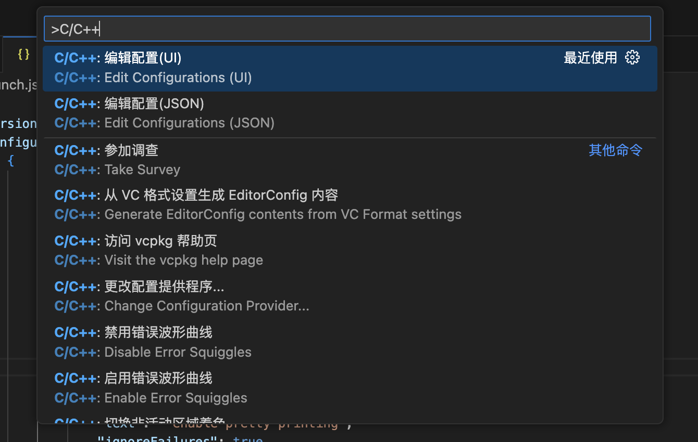
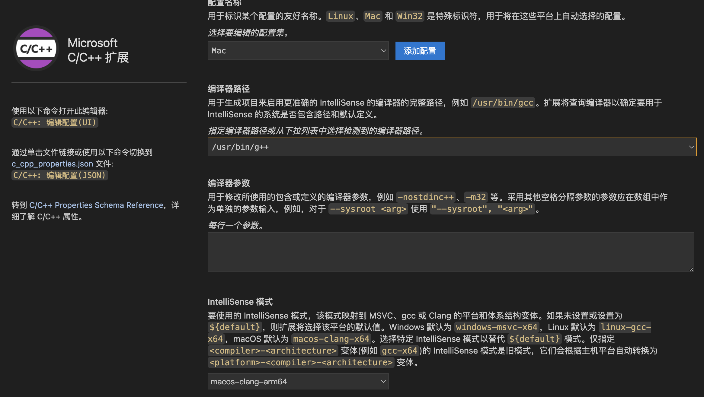
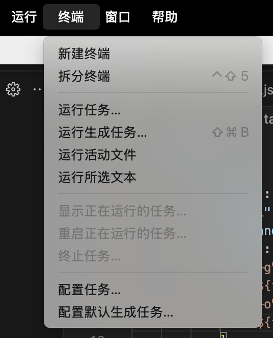
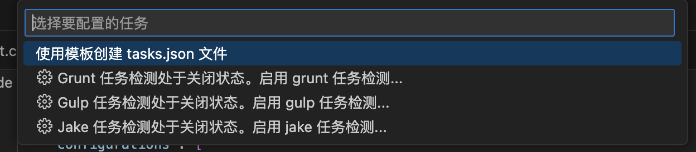
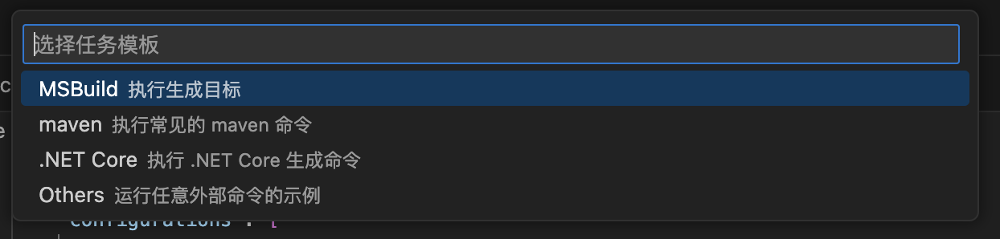
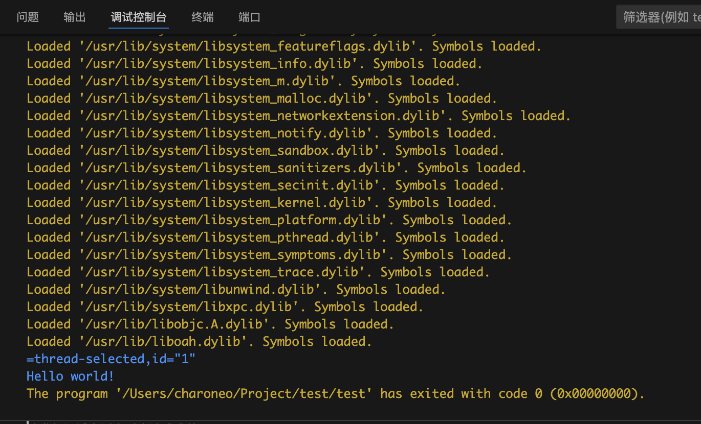
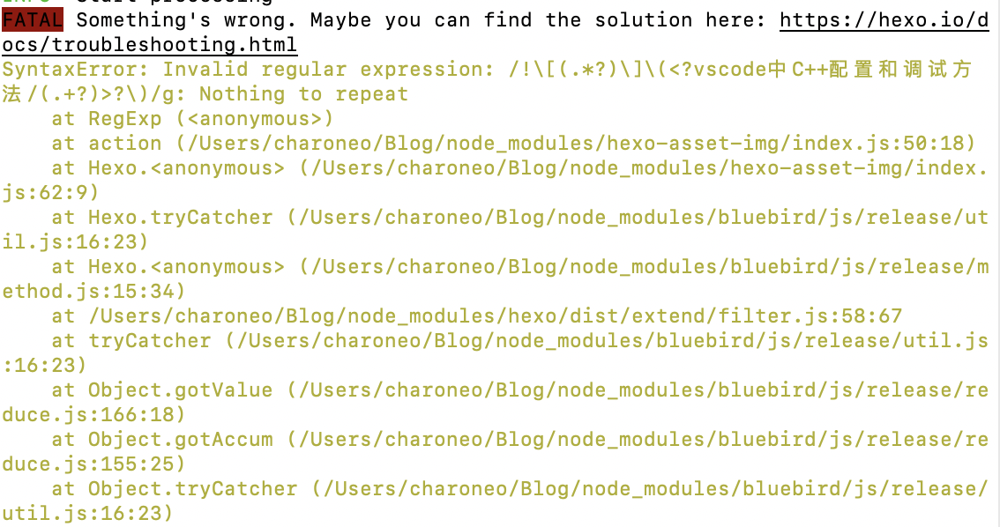

这个话题网上有很多说法，csdn上的教程也很多，但是我看了大多数的教程，大部分是win，且是老版本的vscode，每个人的情况不同，配置的信息不同，我的这个教程也不一定能够包含所有的情况，所以还是以参考为主
首先就是扩展插件部分安装C/C++插件，Chinese simplify等等插件，这两个就够用，可以根据需求装C/C++ Extention和code runner等
MAC版
一、c_cpp_properties.json
command + shift + p或者左下角设置->命令面板，输入C/C++，选择Edit Configuration(UI)，
 在这幅图片中要确保编译器路径和IntelliSense模式这两个配置是符合你的电脑要求的，编译器路径部分g++是C++的编译器，gcc是c语言的编译器，IntelliSense默认就行。
在设置完这些后，会出现一个c_cpp_properties.json文件，是你刚刚配置的相关信息，具体代码如下
1 | { |
可以看到这里的编译器是xcode自带的g++。
二、launch.json
左上角点击运行->添加配置…，这时会出现一个launch.json文件，点击这个文件右下角的添加配置，选择{}C/C++: (lldb)启动（这里和win不同，mac只有lldb启动）
一开始的launch.json只有上图这个最基本的，建议修改为以下内容
1 | { |
有几点需要注意：
name是右侧调试列出现的名称，如下图
program是当前文件的输出路径，${fileDirname}/${fileBasenameNoExtension}表示在当前文件的目录下生成一个名字和cpp文件名字一样的可执行文件（如test.cpp生成test），注意这是mac版，不需要加后缀名。stopAtEntry，这一项控制是否在入口处暂停，默认false不暂停externalConsole，这一项控制是否启动外部控制台（独立的黑框）运行程序，默认false表示在集成终端中运行preLaunchTask，调试前的预执行任务，这里的值是tasks.json文件中对应的编译任务cwd，cwd是 Current Working Directory（当前工作目录）的缩写。它指定了调试时程序的工作目录，也就是程序运行时查找文件和相对路径的起始目录。只有这个配置对了，类似${fileDirname}/${fileBasenameNoExtension}这种才不会出现问题
其他的默认就好
三、tasks.json
左上角点击终端->配置任务…，这里提示用模版创建，这里由于我没有现成的任务模版，只能自己新建一个tasks.json
  1 | { |
注意一下几点：
type，这里是shell表明我是在终端运行的（也就是zsh）label，编译任务的名称，跟上面preLaunchTask的值一致command，这里是系统的c++编译器路径args，${file}表示在当前文件下运行，即要点击到对应运行的cpp文件下，点击开始绿色箭头的开始与调试.${fileDirname}/${fileBasenameNoExtension}表示生成的文件的路径和名称，注意这个要和launch.json中的program一致cwd，重要性见launch.json所述。
其他默认就好
四、运行和调试
配置好上面三个文件后（在.vscode文件夹里，默认隐藏，在访达中command + shift + .即可显示，在vscode中海会自动创建），在右侧选择运行和调试，选择到对应的要编译运行的cpp文件下，注意如果有多个cpp文件需要同时编译，修改tasks.json中的args即可。点击运行与调试旁边的“绿色箭头”，就可以成功运行。
结果如下

如果不习惯调试控制台输出，把externalConsole改为true即可.
五、解决终端将被任务重用，按任意键关闭的问题
在上面的叙述中，如果每一步都按照我的来，最终会在集成终端中出现“终端将被任务重用，按任意键关闭”的字样。这个还好，如果只是简单的输出程序，还可以在调试控制台中看到，但是如果是包含输入相关的程序（如cin），那么程序会被彻底阻塞。你无法在调试控制台输入，更没法在集成终端中输入（因为集成终端只会显示终端任务将被重用、或者生成已完成等等字样，按任意键就会关闭）。
这时你或许还可以把launch.json中的externalConsole改成true，但是这样会使你在全屏显示的情况下，每次都要跳回到桌面显示终端得到结果，而不能简单的在集成终端中显示。
解决方案如下：
在vscode插件中下载一个CodeLLDB扩展，如下图所示
通过访问其github官网https://github.com/vadimcn/codelldb/blob/v1.11.1/MANUAL.md
有这么一段
Starting a New Debug Session
1 | { |
这时，你只需要把<executable file>部分换成你的输出文件即可，如${fileBasenameNoExtension}，参数部分不需要，cwd可以是${workspaceFolder}，也可以是${fileDirname}，我的具体配置如下（将之前的注释掉即可）
1 | { |
注意，上面这一部分代码也可以通过launch.json文件右下角的添加配置...中选择{}CodeLLDB : launch来直接配置
另外，这里要自己加上preLaunchTask，这样就能确保在调试之前能够先执行tasks.json中的任务（也就是编译生成可执行文件），紧接着则集成终端中调试即可，结果如下
现在，你可以尽情用mac来写c++代码了！
补充一个有意思的问题：这篇文章原来的题目是：vscode中C++配置和调试方法，我在hexo g的时候会报错如下

可能是node_modules中的hexo-asset-img这个包的index.js没有正确处理标题中含有++这种的情况，吧++改成pp就能够正常hexo g了